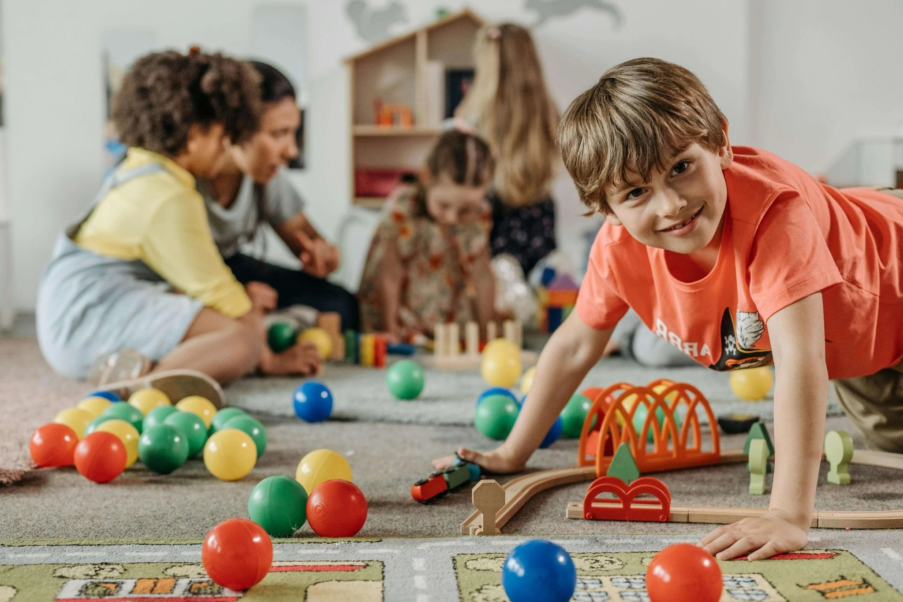
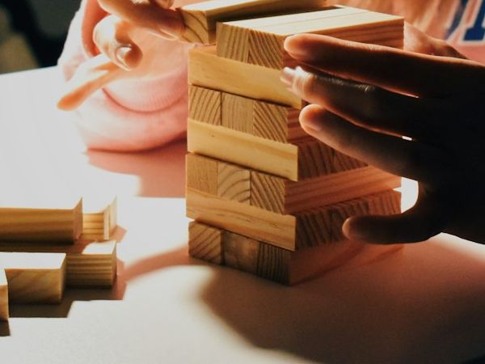
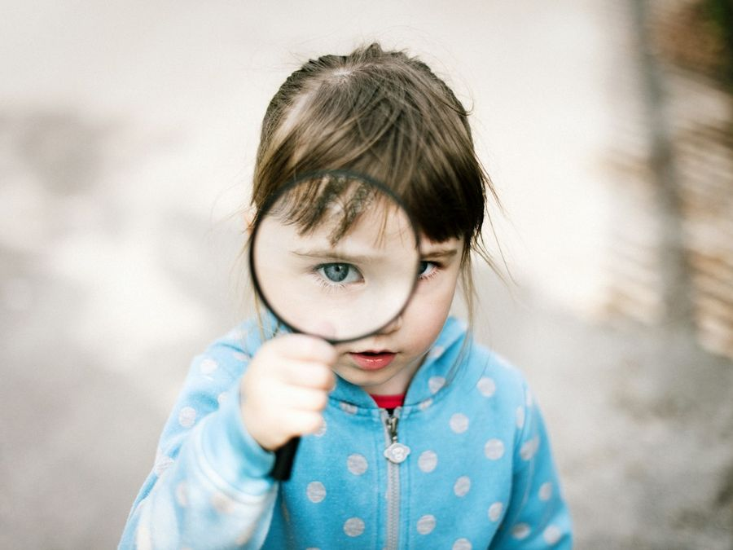
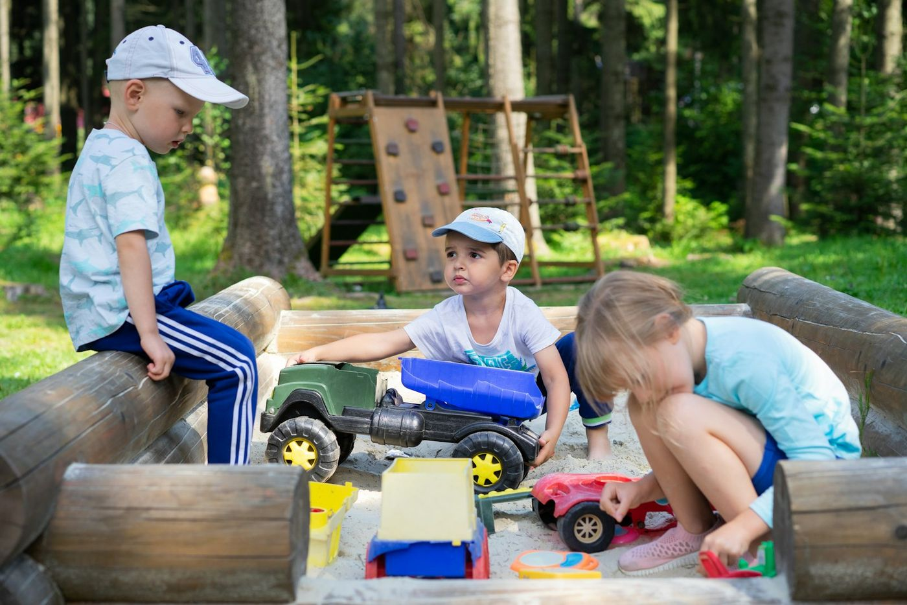
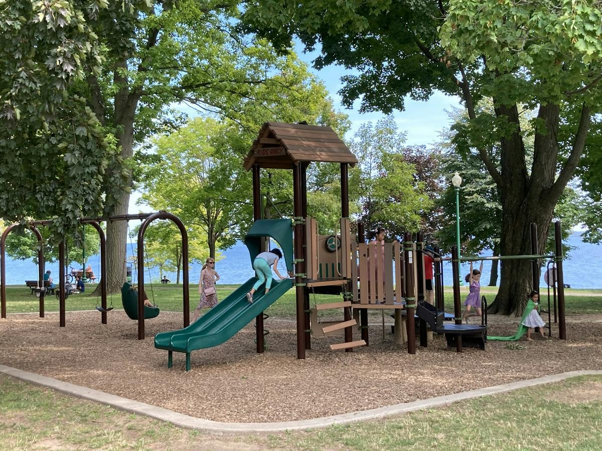

Najmlađi
Topla prilagodba uz starije u grupi. Uče oponašanjem, kroz igru, pjesmu i ritam dana.
Waldorfski vrtić u Splitu
Jedna mješovita grupa djece od 3 do 7 godina, boravak na zraku po svakom vremenu i dan koji ima svoj ritam. U Splitu od 1996.

Oko 20 djece, mlađi i stariji zajedno. Mlađi uče gledajući starije, stariji se brinu o mlađima. Tako radimo od 1996.
Topla prilagodba uz starije u grupi. Uče oponašanjem, kroz igru, pjesmu i ritam dana.

Igra uloga i duže aktivnosti: kolo, slikanje i rad s pčelinjim voskom. Sve više rade sami.

Zadnje godine prije škole. Pomažu mlađima, rade ručni rad i duže se drže jednog zadatka.
Pitajte nas sve o upisu ili dođite na razgovor.
Kroz dan se izmjenjuju vođene aktivnosti i slobodna igra.
Naizmjenično s vođenim aktivnostima
Zagonetke, recitacije i brzalice
Pjevanje i ritmičke igre
Pokret, igre prstima i kolo
Akvarel i voštani pastel
Pčelinji vosak, vezenje i šivanje lutaka
Priče oživljene lutkama
Livada, igralište i šetnje po svakom vremenu
Do sedme godine djeca najviše uče oponašanjem. Zato odgojiteljica pred njima pjeva, slika, radi s pčelinjim voskom i šije lutke, a djeca joj se pridruže kad požele.
Dan ima isti redoslijed, pa dijete zna što slijedi. Na tome stoje i druga načela vrtića: ritam i ponavljanje te zahvalnost i poštovanje.
Isti ritam svaki dan, da dijete zna što slijedi.
Dolazak i slobodna igra, pa kolo, pjesma ili euritmija.
Boravak na zraku po svakom vremenu, pa obrok kuhan u vrtiću.
Slikanje, vosak ili ručni rad, pa slobodna igra i odlazak kući.
Svečanosti i dva izleta.
Što roditelji traže kad biraju vrtić, i što od toga imamo.

Odgojiteljice daju sebe djeci i rade s puno srca.
Zahvalnost i poštovanje djeca uče gledajući odrasle.
Odmor kad ga dijete treba, da ostatak dana ima snage.
Mlađi uče od starijih, a stariji uče brinuti se za druge.
Dijete zna što slijedi, pa se osjeća sigurno.
Vani po svakom vremenu, uz igru i kretanje.
Imate pitanja? Dođite na razgovor ili nas nazovite.
Put Skalica 47, Split.
